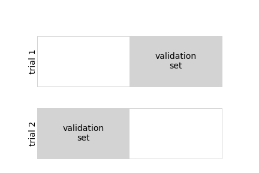
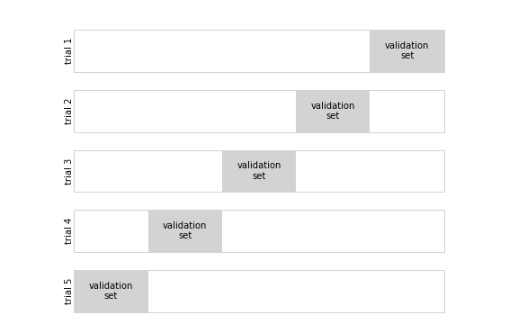
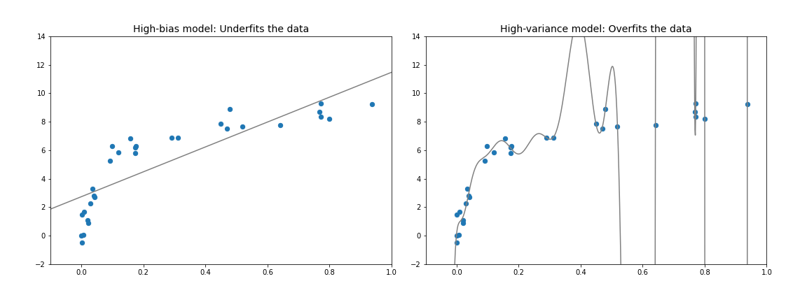
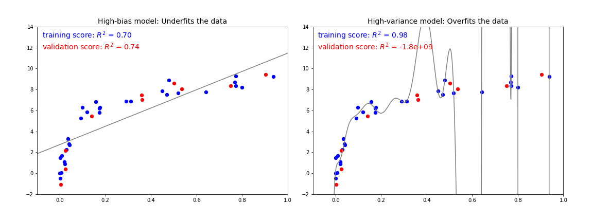
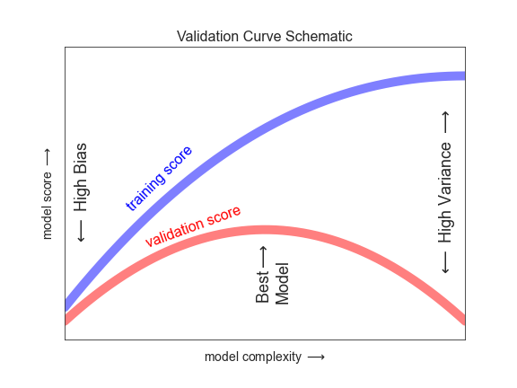
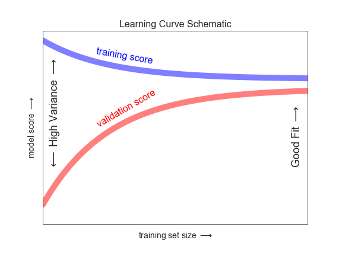

Bu sayfa orijinal kitap bölümünün eksiksiz Türkçe uyarlamasıdır — atlanan başlık/kod yoktur. Zor yerlerde ek ders notu ve 🧪 Şimdi deneyin kutuları vardır.
Orijinal (EN): 05.03 Hyperparameters and Model Validation · Jupyter notebook
5.3 Hiperparametreler ve Model Doğrulama
Orijinal: 05.03 Hyperparameters and Model Validation
Önceki bölümde denetimli bir makine öğrenmesi modelini uygulamanın temel tarifini gördük:
- Bir model sınıfı seçin.
- Model hiperparametrelerini seçin.
- Modeli eğitim verisine uydurun.
- Modeli yeni veri için etiket tahmin etmekte kullanın.
Bu sürecin ilk iki parçası — model seçimi ve hiperparametre seçimi — bu araçları etkili kullanmanın belki de en önemli kısmıdır. Bilinçli seçimler yapabilmek için modelimizin ve hiperparametrelerimizin veriye iyi uyup uymadığını doğrulayacak bir yola ihtiyacımız vardır. Kulağa basit gelse de bunu etkili yapmak için kaçınılması gereken tuzaklar vardır.
Model Doğrulamayı Düşünmek
İlke olarak model doğrulama çok basittir: bir model ve hiperparametrelerini seçtikten sonra, eğitim verisinin bir kısmına uygulayıp tahminleri bilinen değerlerle karşılaştırarak ne kadar etkili olduğunu tahmin edebiliriz.
Bu bölüm önce model doğrulamada naif bir yaklaşımı ve neden başarısız olduğunu gösterecek; ardından daha sağlam model değerlendirmesi için tutma kümeleri ve çapraz doğrulamayı inceleyecektir.
Model Doğrulamanın Yanlış Yolu
Önceki bölümde gördüğümüz Iris veri kümesiyle naif doğrulama yaklaşımıyla başlayalım. Veriyi yükleyerek başlıyoruz:
from sklearn.datasets import load_iris
iris = load_iris()
X = iris.data
y = iris.targetArdından bir model ve hiperparametre seçeriz. Burada n_neighbors=1 ile k-en yakın komşu sınıflandırıcısı kullanacağız.
Bu, "bilinmeyen bir noktanın etiketi, en yakın eğitim noktasının etiketiyle aynıdır" diyen çok basit ve sezgisel bir modeldir:
from sklearn.neighbors import KNeighborsClassifier
model = KNeighborsClassifier(n_neighbors=1)Sonra modeli eğitir ve etiketlerini zaten bildiğimiz veri için etiket tahmin ederiz:
model.fit(X, y)
y_model = model.predict(X)Son olarak doğru etiketlenmiş noktaların oranını hesaplarız:
from sklearn.metrics import accuracy_score
accuracy_score(y, y_model)1,0 doğruluk skoru görüyoruz; bu modelimizin noktaların %100'ünü doğru etiketlediğini gösterir! Ama bu gerçekten beklenen doğruluğu ölçüyor mu? %100 doğru olmasını bekleyeceğimiz bir modele mi rastladık?
Tahmin edebileceğiniz gibi cevap hayır. Bu yaklaşım temel bir kusur içerir: modeli aynı veri üzerinde hem eğitir hem değerlendirir. Ayrıca bu en yakın komşu modeli, eğitim verisini saklayan örnek tabanlı bir tahmin edicidir; yeni veriyi saklanan noktalarla karşılaştırarak etiketler: yapay durumlar dışında her seferinde %100 doğruluk alır!
Eğitim skorunun %100 olması genelde veri sızıntısı veya örnek tabanlı modellerde (1-NN) beklenen bir durumdur. Gerçek performans için mutlaka tutma veya çapraz doğrulama kullanın.
Model Doğrulamanın Doğru Yolu: Tutma Kümeleri
Ne yapılabilir? Model performansına daha iyi bir fikir, tutma kümesi (holdout set) kullanarak elde edilir: model eğitiminden verinin bir alt kümesini geri tutarız, sonra bu tutma kümesiyle performansı kontrol ederiz.
Bu bölme Scikit-Learn'deki train_test_split yardımcısıyla yapılabilir:
from sklearn.model_selection import train_test_split
# split the data with 50% in each set
X1, X2, y1, y2 = train_test_split(X, y, random_state=0,
train_size=0.5)
# fit the model on one set of data
model.fit(X1, y1)
# evaluate the model on the second set of data
y2_model = model.predict(X2)
accuracy_score(y2, y2_model)Burada daha makul bir sonuç görüyoruz: bir-en yakın komşu sınıflandırıcısı bu tutma kümesinde yaklaşık %90 doğru. Tutma kümesi bilinmeyen veriye benzer; model onu daha önce "görmemiştir".
Çapraz Doğrulama ile Model Doğrulama
Tutma kümesi kullanmanın bir dezavantajı, verinin bir kısmını model eğitimine kaybetmemizdir. Önceki durumda veri kümesinin yarısı modele katkıda bulunmuyor! Bu optimal değildir; özellikle başlangıç eğitim verisi küçükse.
Bunu ele almanın bir yolu çapraz doğrulamadır: verinin her alt kümesinin hem eğitim hem doğrulama kümesi olarak kullanıldığı bir dizi uyum yapılır. Görsel olarak aşağıdaki şekle benzer:

Burada iki doğrulama denemesi yapıyoruz; verinin her yarısını sırayla tutma kümesi olarak kullanıyoruz. Daha önce bölünmüş veriyle şöyle uygulayabiliriz:
y2_model = model.fit(X1, y1).predict(X2)
y1_model = model.fit(X2, y2).predict(X1)
accuracy_score(y1, y1_model), accuracy_score(y2, y2_model)Çıkan iki doğruluk skorudur; bunları birleştirerek (örneğin ortalamasını alarak) genel model performansının daha iyi bir ölçüsünü elde edebiliriz. Bu çapraz doğrulama biçimi iki katlı çapraz doğrulamadır — veriyi iki kümeye bölüp her birini sırayla doğrulama kümesi olarak kullandığımız.
Bu fikri daha fazla deneme ve daha fazla katla genişletebiliriz; örneğin aşağıdaki şekil beş katlı çapraz doğrulamayı gösterir.

Veriyi beş gruba bölüp her birini sırayla diğer dörtte beşlik veri üzerinde uydurulan modeli değerlendirmek için kullanırız.
Elle yapmak yorucu olurdu; Scikit-Learn'ün cross_val_score yardımcı rutiniyle özlü yapabiliriz:
from sklearn.model_selection import cross_val_score
cross_val_score(model, X, y, cv=5)Doğrulamayı farklı alt kümelerde tekrarlamak algoritmanın performansı hakkında daha iyi bir fikir verir.
Scikit-Learn belirli durumlarda yararlı birçok çapraz doğrulama şeması uygular; bunlar model_selection modülündeki yineleyicilerle sağlanır.
Örneğin kat sayısını veri noktası sayısına eşitlemek isteyebiliriz: her denemede tüm noktalar hariç bir tanesiyle eğitim.
Bu tür çapraz doğrulamaya leave-one-out (birini bırak) çapraz doğrulama denir:
from sklearn.model_selection import LeaveOneOut
scores = cross_val_score(model, X, y, cv=LeaveOneOut())
scores150 örneğimiz olduğundan leave-one-out çapraz doğrulama 150 deneme skoru verir; her skor başarılı (1,0) veya başarısız (0,0) tahmini gösterir. Bunların ortalaması hata oranı tahmini verir:
scores.mean()Diğer çapraz doğrulama şemaları benzer kullanılabilir.
Scikit-Learn'de nelerin mevcut olduğu için IPython'da sklearn.model_selection alt modülünü keşfedin veya Scikit-Learn çapraz doğrulama dokümantasyonuna bakın.
Iris verisinde 5 katlı çapraz doğrulama skorlarının ortalamasını hesaplayın:
from sklearn.datasets import load_iris
from sklearn.neighbors import KNeighborsClassifier
from sklearn.model_selection import cross_val_score
X, y = load_iris(return_X_y=True)
model = KNeighborsClassifier(n_neighbors=1)
scores = cross_val_score(model, X, y, cv=5)
print("Skorlar:", scores)
print("Ortalama:", scores.mean())En İyi Modeli Seçmek
Doğrulama ve çapraz doğrulamanın temellerini gördükten sonra model seçimi ve hiperparametre seçimine biraz daha derin ineceğiz. Bu konular makine öğrenmesi pratiğinin en önemli yönlerinden bazılarıdır; ancak giriş öğreticilerinde sıkça yüzeysel geçilir.
Önemli soru: tahmin edicimiz yetersiz performans gösteriyorsa nasıl ilerlemeliyiz? Olası cevaplar:
- Daha karmaşık/esnek bir model kullanın.
- Daha az karmaşık/daha az esnek bir model kullanın.
- Daha fazla eğitim örneği toplayın.
- Her örneğe öznitelik eklemek için daha fazla veri toplayın.
Bu sorunun cevabı sıkça sezgisine aykırıdır. Bazen daha karmaşık model daha kötü sonuç verir; daha fazla eğitim örneği eklemek sonucu iyileştirmeyebilir! Modelinizi ne adımlarla iyileştireceğinizi belirleme yeteneği başarılı makine öğrenmesi uygulayıcılarını başarısız olanlardan ayırır.
Önyargı–Varyans Ödünleşimi
Temelde "en iyi modeli" bulmak önyargı (bias) ile varyans arasındaki ödünleşimde uygun bir nokta bulmaktır. Aşağıdaki şekil aynı veri kümesine iki regresyon uyumunu sunar.

Hiçbir model veriye iyi uyum değil; ancak farklı şekillerde başarısız olurlar.
Soldaki model veride düz çizgi uyumu arar. Düz çizgi bu veriyi doğru ayıramayacağından model veri kümesini iyi tanımlayamaz. Böyle bir modele veriyi yetersiz uyum (underfit) yapar denir: tüm öznitelikleri uygun biçimde hesaba katacak esneklik yoktur; modele yüksek önyargı denir.
Sağdaki model yüksek dereceli polinom uydurmayı dener. Uyum ince ayrıntıları neredeyse mükemmel yakalar; ancak biçim veriyi üreten sürecin özelliklerinden çok gürültü özelliklerini yansıtıyor gibi görünür. Böyle bir modele veriyi aşırı uyum (overfit) yapar denir: o kadar esnektir ki rastgele hataları da hesaba katar. Modele yüksek varyans denir.
Başka bir açıdan, bu iki modeli yeni veri için y değerlerini tahmin etmekte kullanırsak ne olur? Aşağıdaki şekildeki grafiklerde kırmızı/açık noktalar eğitim kümesinden çıkarılan veriyi gösterir.

Skor burada $R^2$ skoru veya belirleme katsayısıdır; modelin hedef değerlerin basit ortalamasına göre performansını ölçer. $R^2=1$ mükemmel eşleşme, $R^2=0$ model ortalamadan iyi değil, negatif değerler daha kötü modeller demektir. İki modelin skorlarından daha genel bir gözlem çıkarabiliriz:
- Yüksek önyargılı modellerde doğrulama kümesi performansı eğitim kümesi performansına benzer.
- Yüksek varyanslı modellerde doğrulama performansı eğitim performansından çok daha kötüdür.
Model karmaşıklığını ayarlama yeteneğimiz varsa, eğitim ve doğrulama skorlarının aşağıdaki şekildeki gibi davranmasını bekleriz:

Bu diyagrama sıkça doğrulama eğrisi denir; şu özellikleri görürüz:
- Eğitim skoru her yerde doğrulama skorundan yüksektir. Genelde model gördüğü veriye görmediğine göre daha iyi uyar.
- Çok düşük model karmaşıklığında (yüksek önyargı) eğitim verisi yetersiz uyumludur; model hem eğitim hem görülmemiş veri için zayıf tahmin edicidir.
- Çok yüksek karmaşıklıkta (yüksek varyans) eğitim verisi aşırı uyumludur; eğitim verisini çok iyi tahmin eder ama görülmemiş veride başarısız olur.
- Ara bir değerde doğrulama eğrisinin maksimumu vardır. Bu karmaşıklık önyargı ve varyans arasında uygun ödünleşimi gösterir.
Model karmaşıklığını ayarlama yöntemi modele göre değişir; sonraki bölümlerde her modelin nasıl ayarlandığını göreceğiz.
Scikit-Learn'de Doğrulama Eğrileri
Bir model sınıfı için doğrulama eğrisini çapraz doğrulamayla hesaplamaya bir örnek bakalım. Burada polinom regresyon modeli kullanacağız: polinom derecesi ayarlanabilir bir parametredir. Örneğin derece-1 polinom düz çizgi uydurur; $a$ ve $b$ parametreleriyle: $y = ax + b$
Derece-3 polinom kübik eğri uydurur; $a, b, c, d$ ile: $y = ax^3 + bx^2 + cx + d$
Bunu herhangi sayıda polinom özniteliğine genelleyebiliriz. Scikit-Learn'de doğrusal regresyon sınıflandırıcısı ile polinom ön işlemcisini birleştirerek uygularız. Bu işlemleri bir pipeline ile zincirleriz (Öznitelik Mühendisliği bölümünde polinom öznitelikleri ve pipeline'ları daha ayrıntılı ele alacağız):
from sklearn.preprocessing import PolynomialFeatures
from sklearn.linear_model import LinearRegression
from sklearn.pipeline import make_pipeline
def PolynomialRegression(degree=2, **kwargs):
return make_pipeline(PolynomialFeatures(degree),
LinearRegression(**kwargs))Şimdi modele uyduracağımız veri oluşturalım:
import numpy as np
def make_data(N, err=1.0, rseed=1):
# randomly sample the data
rng = np.random.RandomState(rseed)
X = rng.rand(N, 1) ** 2
y = 10 - 1. / (X.ravel() + 0.1)
if err > 0:
y += err * rng.randn(N)
return X, y
X, y = make_data(40)Veriyi ve birkaç derecede polinom uyumlarını görselleştirebiliriz (aşağıdaki şekil):
%matplotlib inline
import matplotlib.pyplot as plt
plt.style.use('seaborn-whitegrid')
X_test = np.linspace(-0.1, 1.1, 500)[:, None]
plt.scatter(X.ravel(), y, color='black')
axis = plt.axis()
for degree in [1, 3, 5]:
y_test = PolynomialRegression(degree).fit(X, y).predict(X_test)
plt.plot(X_test.ravel(), y_test, label='degree={0}'.format(degree))
plt.xlim(-0.1, 1.0)
plt.ylim(-2, 12)
plt.legend(loc='best');Bu durumda model karmaşıklığını kontrol eden düğme polinom derecesidir; negatif olmayan herhangi bir tamsayı olabilir. Yararlı soru: önyargı (yetersiz uyum) ile varyans (aşırı uyum) arasında uygun ödünleşimi hangi derece sağlar?
Scikit-Learn'ün sağladığı validation_curve yardımcı rutiniyle bu veri ve model için doğrulama eğrisini görselleştirebiliriz.
Verilen model, veri, parametre adı ve keşfedilecek aralık için eğitim ve doğrulama skorlarını otomatik hesaplar (aşağıdaki şekil):
from sklearn.model_selection import validation_curve
degree = np.arange(0, 21)
train_score, val_score = validation_curve(
PolynomialRegression(), X, y,
param_name='polynomialfeatures__degree',
param_range=degree, cv=7)
plt.plot(degree, np.median(train_score, 1),
color='blue', label='training score')
plt.plot(degree, np.median(val_score, 1),
color='red', label='validation score')
plt.legend(loc='best')
plt.ylim(0, 1)
plt.xlabel('degree')
plt.ylabel('score');Beklediğimiz nitel davranışı tam gösterir: eğitim skoru her yerde doğrulamadan yüksek, karmaşıklık arttıkça eğitim skoru monoton iyileşir, doğrulama skoru aşırı uyumdan önce maksimuma ulaşır.
Doğrulama eğrisinden önyargı–varyans arasında optimal ödünleşimin üçüncü derece polinomda olduğunu belirleyebiliriz. Orijinal veri üzerinde bu uyumu hesaplayıp gösterebiliriz (aşağıdaki şekil):
plt.scatter(X.ravel(), y)
lim = plt.axis()
y_test = PolynomialRegression(3).fit(X, y).predict(X_test)
plt.plot(X_test.ravel(), y_test);
plt.axis(lim);Optimal modeli bulmak için eğitim skorunu hesaplamamız gerekmediğine dikkat edin; ancak eğitim ve doğrulama skoru ilişkisine bakmak modele dair yararlı içgörü verir.
Öğrenme Eğrileri
Model karmaşıklığının önemli bir yönü, optimal modelin genelde eğitim verinizin boyutuna bağlı olmasıdır. Örneğin beş kat daha fazla noktayla yeni bir veri kümesi üretelim (aşağıdaki şekil):
X2, y2 = make_data(200)
plt.scatter(X2.ravel(), y2);Önceki kodu tekrarlayarak bu büyük veri kümesi için doğrulama eğrisini çizelim; referans için önceki küçük veri sonuçlarını da üstüne çizelim (aşağıdaki şekil):
degree = np.arange(21)
train_score2, val_score2 = validation_curve(
PolynomialRegression(), X2, y2,
param_name='polynomialfeatures__degree',
param_range=degree, cv=7)
plt.plot(degree, np.median(train_score2, 1),
color='blue', label='training score')
plt.plot(degree, np.median(val_score2, 1),
color='red', label='validation score')
plt.plot(degree, np.median(train_score, 1),
color='blue', alpha=0.3, linestyle='dashed')
plt.plot(degree, np.median(val_score, 1),
color='red', alpha=0.3, linestyle='dashed')
plt.legend(loc='lower center')
plt.ylim(0, 1)
plt.xlabel('degree')
plt.ylabel('score');Düz çizgiler yeni sonuçları, soluk kesikli çizgiler önceki küçük veri kümesi sonuçlarını gösterir. Doğrulama eğrisinden büyük veri kümesinin çok daha karmaşık bir modeli destekleyebileceği açıktır: tepe muhtemelen derece 6 civarındadır; hatta derece-20 model bile ciddi aşırı uyum yapmaz — doğrulama ve eğitim skorları birbirine yakın kalır.
Doğrulama eğrisi davranışının iki önemli girdisi vardır: model karmaşıklığı ve eğitim noktası sayısı. Eğitim noktası sayısına göre model davranışını, modele giderek büyük alt kümelerle uyum yaparak inceleyebiliriz. Eğitim kümesi boyutuna göre eğitim/doğrulama skorunun grafiğine bazen öğrenme eğrisi denir.
Belirli karmaşıklıktaki bir modelden beklediğimiz genel davranış:
- Belirli karmaşıklıktaki model küçük veri kümesini aşırı uyumlar: eğitim skoru nispeten yüksek, doğrulama nispeten düşük.
- Belirli karmaşıklıktaki model büyük veri kümesini yetersiz uyumlar: eğitim skoru düşer, doğrulama skoru artar.
- Model şans dışında doğrulama kümesine eğitimden daha iyi skor vermez: eğriler birbirine yaklaşır ama kesişmemeli.
Bu özelliklerle öğrenme eğrisinin nitel olarak aşağıdaki şekildeki gibi görünmesini bekleriz:

Öğrenme eğrisinin dikkat çeken özelliği, eğitim örneği sayısı arttıkça belirli bir skora yakınsamasıdır. Özellikle belirli bir model yakınsadığında daha fazla eğitim verisi yardımcı olmaz! Bu durumda performansı artırmanın tek yolu başka (genelde daha karmaşık) bir model kullanmaktır.
Scikit-Learn'de Öğrenme Eğrileri
Scikit-Learn modellerinizden böyle öğrenme eğrilerini hesaplamak için uygun bir araç sunar; orijinal veri kümesi için ikinci derece polinom modeli ve dokuzuncu derece polinom için öğrenme eğrisi hesaplayacağız (aşağıdaki şekil):
from sklearn.model_selection import learning_curve
fig, ax = plt.subplots(1, 2, figsize=(16, 6))
fig.subplots_adjust(left=0.0625, right=0.95, wspace=0.1)
for i, degree in enumerate([2, 9]):
N, train_lc, val_lc = learning_curve(
PolynomialRegression(degree), X, y, cv=7,
train_sizes=np.linspace(0.3, 1, 25))
ax[i].plot(N, np.mean(train_lc, 1),
color='blue', label='training score')
ax[i].plot(N, np.mean(val_lc, 1),
color='red', label='validation score')
ax[i].hlines(np.mean([train_lc[-1], val_lc[-1]]), N[0],
N[-1], color='gray', linestyle='dashed')
ax[i].set_ylim(0, 1)
ax[i].set_xlim(N[0], N[-1])
ax[i].set_xlabel('training size')
ax[i].set_ylabel('score')
ax[i].set_title('degree = {0}'.format(degree), size=14)
ax[i].legend(loc='best')Bu değerli bir tanıdır; modelimizin artan eğitim verisine nasıl yanıt verdiğinin görsel tasvirini verir. Özellikle öğrenme eğrisi zaten yakınsadığında (eğitim ve doğrulama eğrileri birbirine yakınsa) daha fazla eğitim verisi uydurmayı anlamlı biçimde iyileştirmez! Bu durum sol panelde derece-2 modelinin öğrenme eğrisinde görülür.
Yakınsama skorunu artırmanın tek yolu farklı (genelde daha karmaşık) bir model kullanmaktır. Sağ panelde çok daha karmaşık bir modele geçince yakınsama skoru artar (kesikli çizgiyle gösterilir); ancak daha yüksek model varyansı pahasına (eğitim ve doğrulama skorları arasındaki fark). Daha fazla veri noktası eklense daha karmaşık modelin öğrenme eğrisi de yakınsardı.
Seçtiğiniz model ve veri kümesi için öğrenme eğrisi çizmek analizinizi nasıl ilerleteceğinize karar vermenize yardımcı olabilir.
Pratikte Doğrulama: Grid Search
Önceki tartışma önyargı–varyans ödünleşimine ve model karmaşıklığı ile eğitim kümesi boyutuna bağımlılığına sezgi vermek içindi. Pratikte modellerin genelde birden fazla ayar düğmesi vardır; doğrulama ve öğrenme eğrileri çizgilerden çok boyutlu yüzeylere dönüşür. Bu durumlarda görselleştirmeler zordur; doğrulama skorunu maksimize eden modeli bulmayı tercih ederiz.
Scikit-Learn bu aramayı kolaylaştıran araçlar sunar; optimal polinom modelini bulmak için grid search kullanacağız.
İki boyutlu bir model özellik ızgarası keşfedeceğiz: polinom derecesi ve kesişim sığdırılıp sığdırılmayacağını söyleyen bayrak.
Bunu Scikit-Learn'ün GridSearchCV meta-tahmin edicisiyle kurabiliriz:
from sklearn.model_selection import GridSearchCV
param_grid = {'polynomialfeatures__degree': np.arange(21),
'linearregression__fit_intercept': [True, False]}
grid = GridSearchCV(PolynomialRegression(), param_grid, cv=7)Normal bir tahmin edici gibi henüz hiçbir veriye uygulanmadığına dikkat edin.
fit yöntemi her ızgara noktasında modeli uydurur ve skorları izler:
grid.fit(X, y);Model uydurulduktan sonra en iyi parametreleri sorabiliriz:
grid.best_params_Son olarak istersek en iyi modeli kullanıp önceki kodla veriye uyumu gösterebiliriz (aşağıdaki şekil):
model = grid.best_estimator_
plt.scatter(X.ravel(), y)
lim = plt.axis()
y_test = model.fit(X, y).predict(X_test)
plt.plot(X_test.ravel(), y_test);
plt.axis(lim);GridSearchCV'deki diğer seçenekler özel skorlama fonksiyonu, hesaplamaları paralelleştirme, rastgele aramalar vb. içerir.
Daha fazla bilgi için Derinlemesine: Çekirdek Yoğunluk Tahmini ve Görüntü Öznitelikleri bölümlerindeki örneklere veya Scikit-Learn grid search dokümantasyonuna bakın.
Özet
Bu bölümde model doğrulama ve hiperparametre optimizasyonu kavramını incelemeye başladık; önyargı–varyans ödünleşiminin sezgisel yönlerine ve modelleri veriye uydururken nasıl devreye girdiğine odaklandık. Özellikle daha karmaşık/esnek modellerde aşırı uyumdan kaçınmak için parametre ayarlarken doğrulama kümesi veya çapraz doğrulama kullanımının hayati olduğunu gördük.
Sonraki bölümlerde özellikle yararlı modellerin ayrıntılarını, bu modeller için hangi ayarların mevcut olduğunu ve serbest parametrelerin model karmaşıklığını nasıl etkilediğini tartışacağız. Bu bölümün derslerini okurken makine öğrenmesi yaklaşımlarını öğrenirken aklınızda tutun!